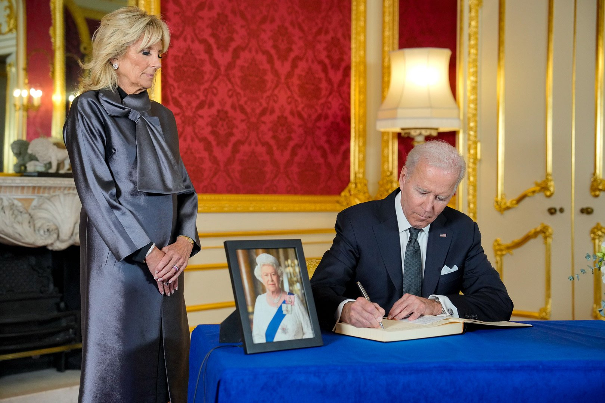

President Biden
@POTUS . Sep 20
Today Jill and I signed the Official Condolence Book for Her Majesty Queen Elizabeth II.
We first met the Queen in 1982, and will always remember her kindness and hospitality. Her legacy will loom large in the pages of British history, and in the story of our world.

President to address US general Assembly
In the years ahead, we look forward to continuing a close friendship with The King and The Queen Consort. Today, the thoughts and prayers of people all across the United States are with the people of the United Kingdom and the Commonwealth in their grief. We send our deepest condolences to the Royal Family
🔗 whitehouse.gov